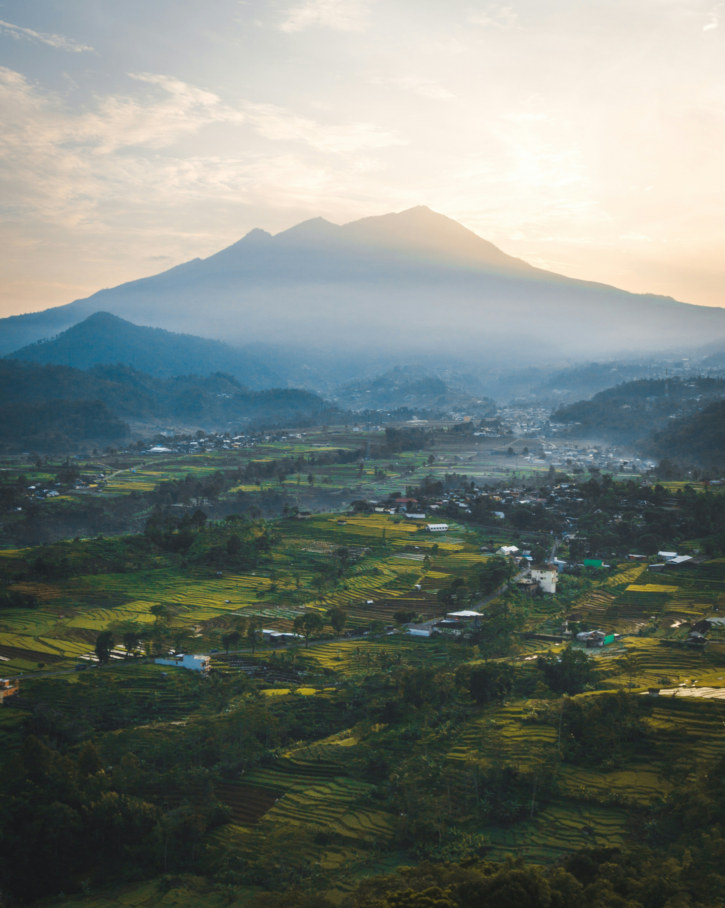

Jawa Tengah adalah sebuah provinsi di Indonesia yang terletak di tengah Pulau Jawa. Dikutip dari kebudayaan.kemdikbud.go.id, sejak masa prasejarah, Jawa Tengah telah menduduki posisi penting dalam sejarah kehidupan manusia. Hal itu dibuktikan dengan temuan arkeologis di beberapa situs, salah satunya situs Sangiran sebagai tempat tinggal manusia purba. Pada abad VII, telah berdiri sebuah kerajaan Mataram Kuno yang wilayahnya meliputi seluruh provinsi Jawa Tengah, Daerah Istimewa Yogyakarta, dan sebagian Jawa Timur. Kerajaan ini berdiri sejak abad ke-8 hingga ke-10 dan meninggalkan bangunan-bangunan monumental berupa Candi-candi yang megah, seperti Candi Borobudur, Candi Prambanan, Candi Mendut, Candi Plaosan, Candi Sewu, Candi Mendut, Candi Pawon, dan masih banyak lagi. Kemudian pada akhir abad ke-15, Kerajaan Islam muncul di Demak. Pada awal abad ke-16, bangsa Portugis pertama kali datang ke Indonesia setelah menaklukkan Kota Melaka. Pada saat yang sama, bangsa Inggris dan Belanda juga datang ke wilayah Indonesia untuk mencari rempah-rempah. Sejarah perjuangan bangsa Indonesia dalam meraih kemerdekaan dimulai sejak penjajahan oleh bangsa asing karena melimpahnya sumber daya alam Indonesia. Setelah Kemerdekaan 17 Agustus 1945, berdasarkan Pasal 18 Undang-Undang Dasar 1945, diterbitkan Undang-Undang Nomor 10 Tahun 1950 yang menetapkan Pembentukan Provinsi Jawa Tengah. Sesuai dengan Undang-Undang Nomor 10 Tahun 1950 dan Peraturan Pemerintah Nomor 31 Tahun 1950, pembentukan Provinsi Jawa Tengah dinyatakan berlaku pada tanggal 15 Agustus 1950. Sejak merdeka sampai sekarang, Jawa Tengah telah dipimpin oleh 13 (tiga belas) Kepala Pemerintahan. Provinsi Jawa Tengah terdiri dari 29 Kabupaten dan 6 Kota dengan Kota Semarang sebagai Ibukota.
Jawa Tengah memiliki motto *Prasetya ulah sakti bhakti praja*. Provinsi ini memiliki daerah kabupaten dan kota yang memiliki kekayaan alam dan karya seni yang menjadi ciri khas Jawa Tengah. Contohnya, Kota Jepara di Jawa Tengah terkenal dengan hasil karya seni terapan daerah yaitu dalam bentuk seni ukir atau ukiran. Karya seni ini biasanya terlihat di rumah-rumah adat jawa tengah seperti Joglo. Kota Pekalongan adalah salah satu kota di Jawa Tengah yang terkenal sebagai kota batik. Biasanya karya batik ini seringkali dijadikan juga sebagai pakaian. Motif batik Pekalongan yang terkenal adalah motif batik Jlamprang. Motif Jlamprang memiliki filosofi persatuan budaya Islam dan Hindu di Jawa Tengah. Meski dengan perbedaan, kedua agama ini bisa hidup rukun saling mengayomi satu sama lain.
